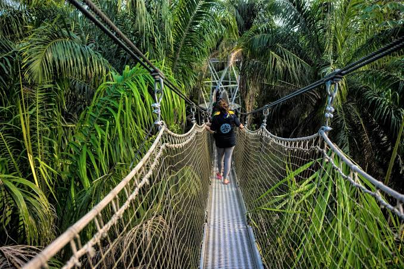
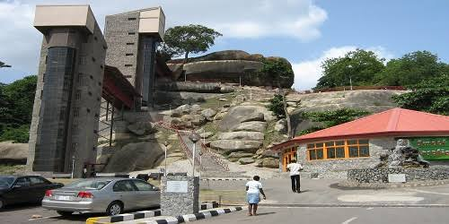
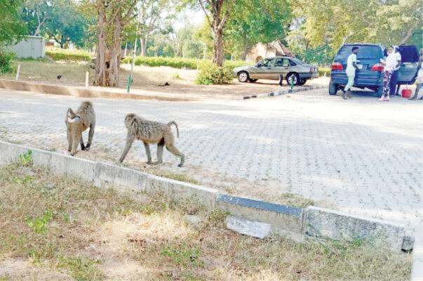
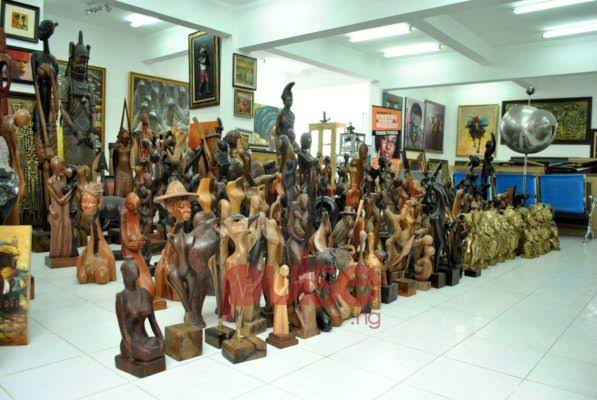

Welcome to Nigeria, a land of diversity, vitality, and energy. From Lagos' vibrant streets to Yankari's natural wonders, Nigeria offers dynamic experiences.
Find HelpCreate Memories That Last a Lifetime
Experience nature at its finest at the Lekki Conservation Centre, home to diverse wildlife, lush vegetation, and the iconic canopy walkway.
Climb the ancient Olumo Rock for panoramic views of Abeokuta and explore the historic caves and shrines nestled within its rugged terrain.
Discover the natural beauty and wildlife diversity of Yankari National Park, home to elephants, lions, and picturesque warm springs.
Immerse yourself in the vibrant world of Nigerian art at the Nike Art Gallery, showcasing traditional and contemporary artworks from local artists.
Select attractions, restaurants, and activities to create your custom itinerary and book now.
Olumo Rock in Abeokuta and Lekki Conservation Centre in Lagos provided glimpses into Nigeria's rich cultural and natural heritage. We can't wait to explore more!
The Nike Art Gallery in Lagos and Yankari National Park in Bauchi showcased Nigeria's art and wildlife in all their glory. Truly unforgettable experiences!